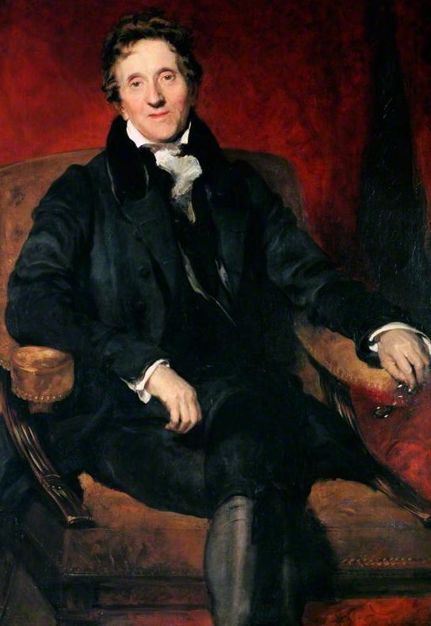
John SoaneEl viaje clásico · Italia y Malta, 1778–1780
Itinerario · 53 estancias
Eje cronológico del viaje
Documentación histórica y reconstrucción
John Soane (1753–1837) nació en Goring-on-Thames, hijo de un albañil. Se formó en los estudios de George Dance el Joven y de Henry Holland y en las escuelas de la Royal Academy, donde obtuvo en 1776 la medalla de oro de arquitectura1. Este premio le valió la beca de viaje que el rey concedía a través de la Royal Academy, y que financió su estancia en Italia2. Tras su regreso desarrollaría una de las carreras más destacadas del neoclasicismo británico: fue arquitecto del Banco de Inglaterra desde 1788 y profesor de arquitectura de la Royal Academy desde 1806, y convirtió su casa de Lincoln’s Inn Fields en el museo que hoy custodia su archivo.
Las fuentes disponibles para la reconstrucción de su viaje son: correspondencia, cuadernos de viaje y dibujos conservados en el Sir John Soane’s Museum y accesibles en su catálogo en línea, que permiten reconstruir el recorrido con un elevado grado de detalle. Se dispone, además, de la monografía de Du Prey y del estudio de Ceserani.
En marzo de 1778, con 24 años y recién concluida su formación, Soane parte de Londres hacia Italia. Su viaje responde al modelo de los pensionados de las academias en Roma, como los de la Académie de France à Rome: jóvenes artistas y arquitectos becados para completar su formación en contacto directo con la Antigüedad. Este modelo es importante porque convierte el viaje en una etapa reglada de la formación del arquitecto. Como esos pensionados, Soane plantea el viaje casi como una estancia en Roma, desde donde realiza salidas para visitar otras ciudades de Italia, Sicilia y Malta. Es, por tanto, un viaje de formación en el sentido más literal, realizado al término de sus estudios y en pleno auge del neoclasicismo.
El recorrido puede resumirse de forma sencilla. Soane llega a Roma en mayo de 1778 y permanece allí hasta diciembre. A comienzos de 1779 se desplaza al sur y se instala en Nápoles, desde donde visita Pompeya, Salerno y Paestum; vuelve brevemente a Roma en primavera y, de nuevo desde Nápoles, viaja en mayo y junio a Sicilia y Malta. En julio regresa a Nápoles y a Roma. En agosto y septiembre de 1779 realiza una rápida incursión al norte —Ancona, Bolonia, Parma, Milán, Brescia, Verona, Mantua, Padua y Venecia— y vuelve por Florencia a Roma, donde pasa el invierno. Finalmente, en abril de 1780 emprende el regreso a Inglaterra, recorriendo con algo más de detenimiento, entre otras, Siena, Florencia, Ferrara, Padua, Vicenza, Verona, Mantua, Parma, Milán, Pavía, Génova y Como.
Los datos del SIG permiten precisar este reparto. El viaje duró 753 días, de los que Soane pasó 478 en Roma, repartidos en cuatro periodos, lo que supone un 63 % del total. Roma y el sur —Nápoles, la Campania, Sicilia y Malta— concentran en conjunto el 82 % del tiempo. Entre las demás ciudades que visita desde Roma destaca Nápoles, a la que vuelve hasta en cinco ocasiones, con estancias de al menos cinco días en todas ellas.
Esta concentración en el sur sugiere un interés especial por los asentamientos de origen grecorromano y una prioridad del arte clásico sobre el renacentista, como confirman sus visitas expresas a Paestum, en dos ocasiones, y a Pompeya.
Los viajes al norte, en cambio, son rápidos y suman una parte menor del tiempo. El primero tiene el carácter de una gira de reconocimiento, en la que destaca la detención en Padua y Venecia; el segundo es ya el viaje de regreso, que Soane acortó, según Ceserani y su equipo, para aprovechar las oportunidades profesionales que se le ofrecían en Inglaterra. Aun así, su paso por el Véneto no es irrelevante: como se verá, la huella de Palladio es visible en su arquitectura residencial.
Los bocetos de sus cuadernos responden a lo que cabría esperar de un viaje clásico: un especial énfasis en representar la realidad, copiando con fidelidad proporciones y ornamentos, con plantas y anotaciones de tono analítico sobre lo visitado. En muy raras ocasiones sus dibujos representan el entorno del edificio o el paisaje; este estudio de la arquitectura como objeto en sí mismo es otro indicador del espíritu ilustrado del viaje. Sus cuadernos registran también, con minuciosidad casi contable, las etapas y los gastos del camino, como muestra la entrada de su llegada a Milán:

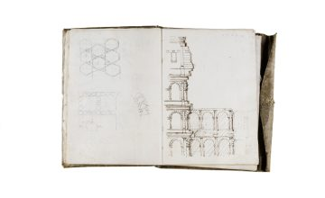

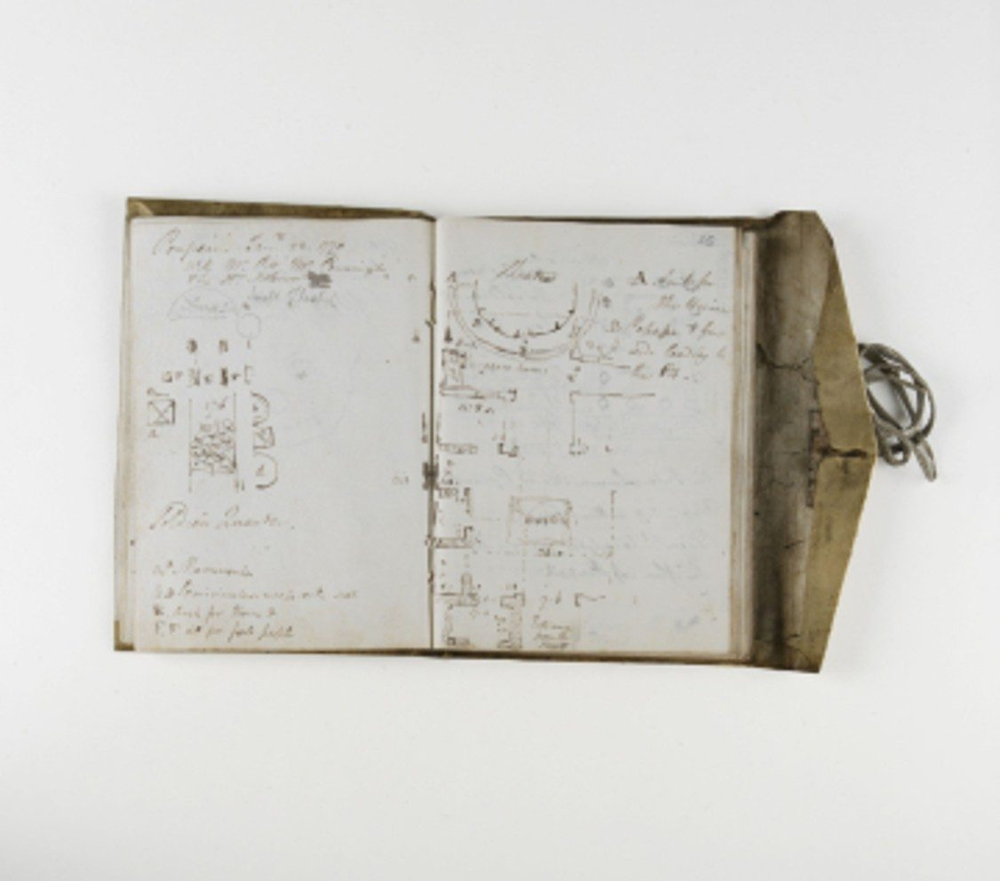

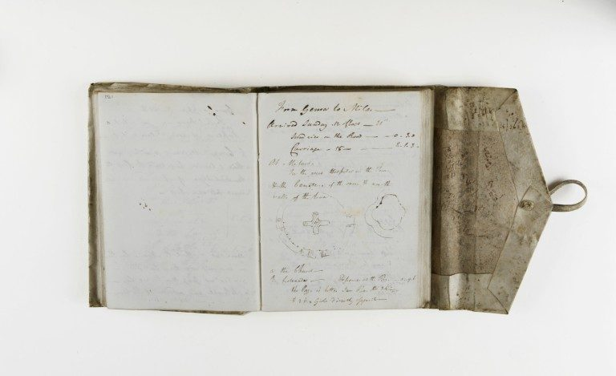
«De Génova a Milán / Llegada el domingo, a las 12 — día 21 / Gastos varios en el camino: 0.3.0 / Carruaje: 55 — 2.1.3 / En Milán / Ver el gran Hospital de la ciudad / y sus cementerios, etc., cerca de / las murallas de la ciudad» (trad. propia)3
Nota: la fecha con la que el archivo registra esta entrada parece errónea, ya que la sitúa en 1779, y el 21 de mayo de ese año no fue domingo.
Influencia en la arquitectura posterior
El propio Soane describió la importancia que el viaje había tenido en su carrera:
«Fui enviado a Italia para proseguir mis estudios […]. Fue el acontecimiento más afortunado de mi vida, pues fue el medio por el que establecí las relaciones a las que debo todas las ventajas de que he disfrutado desde entonces» (trad. propia)4.
De estas palabras se desprende que la importancia del viaje se debió en gran parte a la red de contactos que Soane estableció en Italia. Como expone Du Prey en su monografía sobre el arquitecto5, Soane entabló allí al menos ocho relaciones importantes con personas que después le hicieron encargos o lo recomendaron a nuevos clientes. Entre ellas destaca Frederick Hervey, obispo de Derry, su principal valedor durante la estancia en Italia.
Por otra parte, el viaje dejó una clara influencia formal en su arquitectura. Soane es considerado uno de los grandes arquitectos del neoclasicismo, corriente en la que se trasladan directamente motivos ornamentales, composiciones y órdenes de la arquitectura clásica.
En su arquitectura más institucional pueden verse claros ejemplos de esta traslación de lo visto en Italia a lo construido después.
Es el caso del Banco de Inglaterra, del que Soane fue arquitecto entre 1788 —ocho años después de su regreso de Italia— y 1833. En la célebre Tivoli Corner reinterpreta el templo de Vesta en Tívoli, en las cercanías de Roma, adaptándolo para resolver el remate en esquina del edificio.
no se reproduce en la versión web.Ver en la fuente ↗
En el mismo edificio, la desaparecida Rotonda del Banco de Inglaterra buscaba un juego de luces similar al del Panteón de Agripa, que Soane había dibujado minuciosamente en Roma. Más tarde, inspirado por los grabados que Piranesi le regaló durante su estancia en Roma, Soane encargó a Joseph Michael Gandy una serie de vistas en las que el Banco aparecía como si fuera una ruina romana. La propia Rotonda quedó inmortalizada en una lámina salida de la oficina de Soane y fue finalmente demolida en la reforma del Banco realizada por Herbert Baker entre 1921 y 1939.

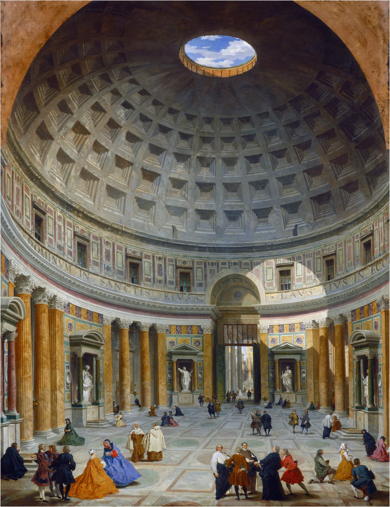

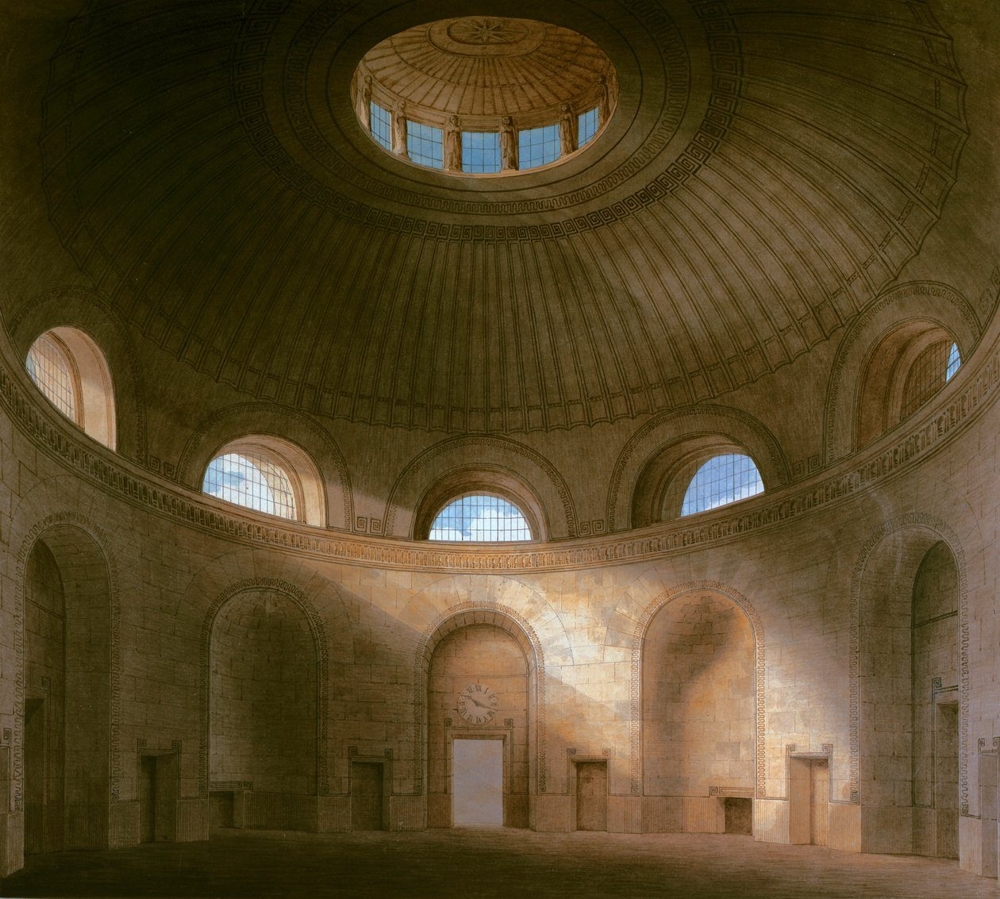
En obras de menor escala también se advierte la influencia del viaje. En el Barn à la Paestum, un granero en Solihull, Soane extrae las proporciones y el orden del templo de Neptuno en Paestum, del que conservaba apuntes en su cuaderno de viaje, y demuestra su interés por el dórico primitivo que conoció en el sur de Italia.
En su arquitectura residencial, Soane muestra una clara predilección por las villas palladianas: sus proyectos guardan una enorme similitud con las obras del maestro tardorrenacentista, tanto en la composición de las fachadas como en la distribución de las plantas. Esta predilección es coherente con su mayor detenimiento, en los viajes al norte, en el triángulo Venecia–Vicenza–Padua, zona de nacimiento y de mayor actividad de Andrea Palladio.

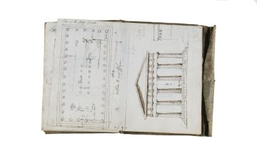

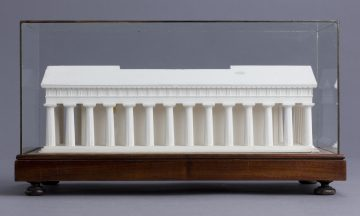
no se reproduce en la versión web.Ver en la fuente ↗

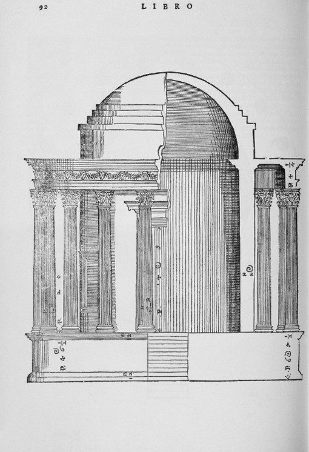

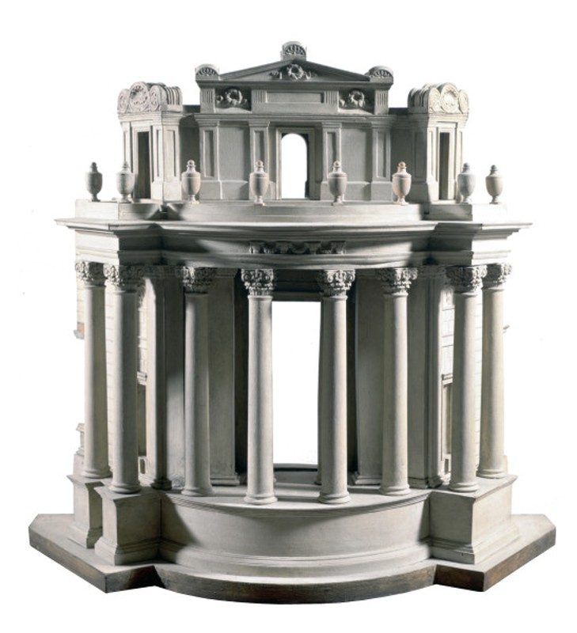

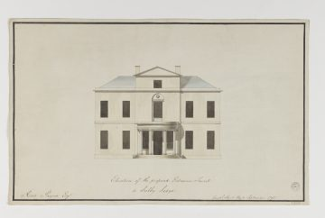

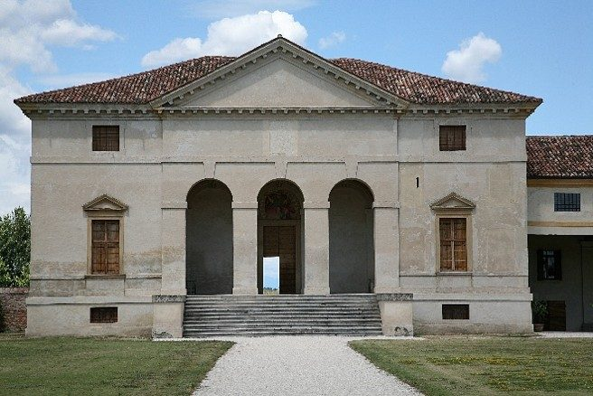